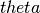
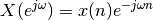

utils package¶
Submodules¶
utils.clean_data module¶
Contains methods to extract numpy array objects from the h5py object extracted from the S3 bucket.
-
utils.clean_data.get_eeg_data(f)[source]¶ Extract an eeg numpy data matrix from the h5py object.
Parameters: f : h5py object
a h5py object obtained from the make_h5py_object function in the get_data module
Returns: eeg_data :
ndarrayA (t, c)
ndarray(t is the number of timesteps, c is the number of channels).Notes
The dataset has 111 channels.
Timesteps are measured in milliseconds, and values were measured at 500 Hz.
Examples
These are written in doctest format, and should illustrate how to use the function.
>>> from get_data import get_record, get_patients, make_h5py_object >>> f = get_record(get_patients()[0]) >>> data = make_h5py_object(f) >>> eeg_data = get_eeg_data(data)
-
utils.clean_data.get_electrode_coords(f, coords='euclidian')[source]¶ Extract times numpy matrix from the h5py object.
Parameters: f : h5py object
a h5py object obtained from the make_h5py_object function in the get_data module
coords : string
‘euclidian’ for euclidian coordinates, ‘spherical’ for spherical coordinates (not really with a variable radius coordinate).
Returns: electrode_coords :
ndarrayA (t, 3)
ndarray(t is the number of timesteps, columns are x, y, z or , , r).
, r).Notes
Spherical has a variable radius parameter.
Timesteps are measured in milliseconds, and values were measured at 500 Hz.
Examples
>>> from get_data import get_record, get_patients, make_h5py_object >>> f = get_record(get_patients()[0]) >>> data = make_h5py_object(f) >>> coords = get_electrode_coords(data, coords = "spherical")
-
utils.clean_data.get_times(f)[source]¶ Extract times numpy matrix from the h5py object.
Parameters: f : h5py object
a h5py object obtained from the make_h5py_object function in the get_data module
Returns: times :
ndarrayA (t, 1)
ndarray(t is the number of timesteps).Notes
The dataset has 111 channels.
Timesteps are measured in milliseconds, and values were measured at 500 Hz.
Examples
>>> from get_data import get_record, get_patients, make_h5py_object >>> f = get_record(get_patients()[0]) >>> data = make_h5py_object(f) >>> times = get_times(data)
utils.example module¶
This is the docstring for the example.py module. Modules names should have short, all-lowercase names. The module name may have underscores if this improves readability.
Every module should have a docstring at the very top of the file. The module’s docstring may extend over multiple lines. If your docstring does extend over multiple lines, the closing three quotation marks must be on a line by itself, preferably preceded by a blank line.
-
utils.example.foo(var1, var2, long_var_name='hi')[source]¶ A one-line summary that does not use variable names or the function name.
Several sentences providing an extended description. Refer to variables using back-ticks, e.g. var.
Parameters: var1 : array_like
Array_like means all those objects – lists, nested lists, etc. – that can be converted to an array. We can also refer to variables like var1.
var2 : int
The type above can either refer to an actual Python type (e.g.
int), or describe the type of the variable in more detail, e.g.(N,) ndarrayorarray_like.long_var_name : {‘hi’, ‘ho’}, optional
Choices in brackets, default first when optional.
Returns: type
Explanation of anonymous return value of type
type.describe : type
Explanation of return value named describe.
out : type
Explanation of out.
Other Parameters: only_seldom_used_keywords : type
Explanation
common_parameters_listed_above : type
Explanation
Raises: BadException
Because you shouldn’t have done that.
See also
otherfunc- relationship (optional)
newfunc- Relationship (optional), which could be fairly long, in which case the line wraps here.
thirdfunc,fourthfunc,fifthfuncNotes
Notes about the implementation algorithm (if needed).
This can have multiple paragraphs.
You may include some math:

And even use a greek symbol like
 inline.
inline.References
Cite the relevant literature, e.g. [R2]. You may also cite these references in the notes section above.
[R2] (1, 2) O. McNoleg, “The integration of GIS, remote sensing, expert systems and adaptive co-kriging for environmental habitat modelling of the Highland Haggis using object-oriented, fuzzy-logic and neural-network techniques,” Computers & Geosciences, vol. 22, pp. 585-588, 1996. Examples
These are written in doctest format, and should illustrate how to use the function.
>>> a = [1, 2, 3] >>> print [x + 3 for x in a] [4, 5, 6] >>> print "a\n\nb" a b
utils.fourier module¶
Contains basic signal processing utilities.
-
utils.fourier.butter_bandpass_filter(data, cutoff, Fs, order=5)[source]¶ Constructs a bandpass filter at given cutoff range
Parameters: data :
ndarraya (t, 1)
ndarrayrepresenting a discretely sampled time-series signal with t timesteps.cutoff : [float, float]
the [lower, upper] bound frequency let through the filter.
Fs : float
the sampling frequency of the signal
order : int
the order of the filter
Returns: filtered_signal : numpy matrix
the filtered signal
Notes
Relies on scipy.signal
Examples
>>> T = 10 # Signal lasts 10 seconds >>> Fs = 40 # We sample the signal at 40 Hz >>> w1 = .1 >>> w2 = 1 >>> w3 = 4 >>> sample_points = np.linspace(0, T, T * Fs) >>> sines_w1 = np.sin(w1 * 2 * np.pi * sample_points) >>> sines_w2 = np.sin(w2 * 2 * np.pi * sample_points) >>> sines_w3 = np.sin(w3 * 2 * np.pi * sample_points) >>> signal = sines_w1 + sines_w2 + sines_w3 >>> new_signal = butter_bandpass_filter(signal, [.6, 2], Fs, 5)
-
utils.fourier.butter_bandstop_filter(data, cutoff, Fs, order=5)[source]¶ Constructs a bandstop filter at given cutoff
Parameters: data :
ndarraya (t, 1)
ndarrayrepresenting a discretely sampled time-series signal with t timesteps.cutoff : [float, float]
the [lower, upper] bound frequency let stop with the filter.
Fs : float
the sampling frequency of the signal
order : int
the order of the filter
Returns: filtered_signal : numpy matrix
the filtered signal
Notes
Relies on scipy.signal
Examples
>>> T = 10 # Signal lasts 10 seconds >>> Fs = 40 # We sample the signal at 40 Hz >>> w1 = .1 >>> w2 = 1 >>> w3 = 4 >>> sample_points = np.linspace(0, T, T * Fs) >>> sines_w1 = np.sin(w1 * 2 * np.pi * sample_points) >>> sines_w2 = np.sin(w2 * 2 * np.pi * sample_points) >>> sines_w3 = np.sin(w3 * 2 * np.pi * sample_points) >>> signal = sines_w1 + sines_w2 + sines_w3 >>> new_signal = butter_bandstop_filter(signal, 2, Fs, 5)
-
utils.fourier.butter_highpass_filter(data, cutoff, Fs, order=5)[source]¶ Constructs a highpass filter at given cutoff
Parameters: data :
ndarraya (t, 1)
ndarrayrepresenting a discretely sampled time-series signal with t timesteps.cutoff : float
the upper bound frequency let through the filter.
Fs : float
the sampling frequency of the signal
order : int
the order of the filter
Returns: filtered_signal : numpy matrix
the filtered signal
Notes
Relies on scipy.signal
Examples
>>> T = 10 # Signal lasts 10 seconds >>> Fs = 40 # We sample the signal at 40 Hz >>> w1 = .1 >>> w2 = 1 >>> w3 = 4 >>> sample_points = np.linspace(0, T, T * Fs) >>> sines_w1 = np.sin(w1 * 2 * np.pi * sample_points) >>> sines_w2 = np.sin(w2 * 2 * np.pi * sample_points) >>> sines_w3 = np.sin(w3 * 2 * np.pi * sample_points) >>> signal = sines_w1 + sines_w2 + sines_w3 >>> new_signal = butter_highpass_filter(signal, 2, Fs, 5)
-
utils.fourier.butter_lowpass_filter(data, cutoff, Fs, order=5)[source]¶ Constructs a lowpass filter at given cutoff
Parameters: data : numpy array
a t by 1 numpy array representing a discretely sampled time-series signal with t timesteps.
cutoff : float
the upper bound frequency let through the filter.
Fs : float
the sampling frequency of the signal
order : int
the order of the filter
Returns: filtered_signal : numpy matrix
the filtered signal
Notes
Relies on scipy.signal
Examples
>>> T = 10 # Signal lasts 10 seconds >>> Fs = 40 # We sample the signal at 40 Hz >>> w1 = .1 >>> w2 = 1 >>> w3 = 4 >>> sample_points = np.linspace(0, T, T * Fs) >>> sines_w1 = np.sin(w1 * 2 * np.pi * sample_points) >>> sines_w2 = np.sin(w2 * 2 * np.pi * sample_points) >>> sines_w3 = np.sin(w3 * 2 * np.pi * sample_points) >>> signal = sines_w1 + sines_w2 + sines_w3 >>> new_signal = butter_lowpass_filter(signal, 2, Fs, 5)
utils.get_data module¶
Contains methods to extract data from the S3 bucket.
-
utils.get_data.get_patients()[source]¶ Gets a list of patient numbers to query the S3 bucket with.
Uses a patient list in PATIENT_NUMBERS.txt to construct a python object of strings of patient numbers.
Returns: L :
lista list of strings of patient numbers.
See also
get_record- uses these patient numbers.
Notes
patient numbers are extracted from PATIENT_NUMBERS.txt
Examples
>>> from utils.get_data import get_patients >>> print get_patients()[0] A00055540
-
utils.get_data.get_record(patient, record_num=1, record_type='full')[source]¶ Pulls a patient record from the S3 bucket.
Parameters: patient : string
the patient number of the patient to pull data for.
record_num : int, optional
number of the record to pull. This is usually from 1 to around 10.
record_type : {‘full’, ‘reduced’}, optional
‘full’ by default. ‘reduced’ has less metadata.
Returns: string
the filepath of the .mat file of the record (will go to the tmp) directory.
See also
make_h5py_object- uses filepath to create a h5py object.
Notes
You need to set the amazon keys as environment variables. Put the secret key in
AWS_SECRET_KEYand the regular key inAWS_ACCESS_KEY.Uses the
botopackage to access AWS.Examples
These are written in doctest format, and should illustrate how to use the function.
>>> from utils.get_data import get_patients, get_record >>> print get_patients()[0] 'A00055540' >>> print get_record(get_patients()[0]) '~/.../src/utils/tmp/{recordname}.mat'
-
utils.get_data.make_h5py_object(file_path)[source]¶ Make a h5py object out of a .mat file from your system.
Parameters: file_path : string
absolute path to the .mat file.
Returns: data : h5py object
a h5py object containing a (messy) copy of the data from S3.
See also
utils.clean_data- extract data from object returned from this function
Notes
File should be around 80 mb.
File should be in .mat format.
Examples
>>> from utils.get_data import get_patients, get_record, make_h5py_object >>> print get_patients()[0] 'A00055540' >>> print get_record(get_patients()[0]) '~/.../src/utils/tmp/{recordname}.mat' >>> data = make_h5py_object(get_record(get_patients()[0]))